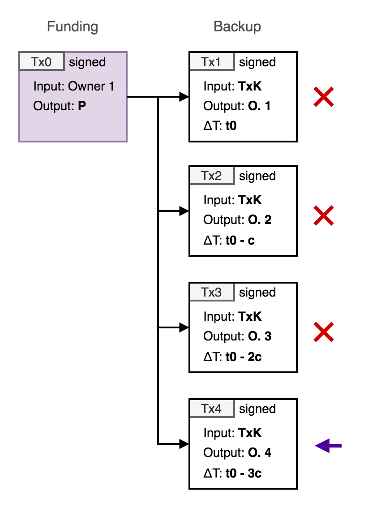

Mercury Layer
Mercury layer is an implementation of a system the uses a blind co-signing and key-update service to enable statechains on Bitcoin. The statechain protocol allows the transfer of ownership of Bitcoin unspent transaction outputs (UTXOs) that remain under the full custody of the owner at all times, while benefiting from instant and zero cost transactions. The ability to perform this transfer without requiring the confirmation (mining) of on-chain transactions has advantages in a variety of different applications.
Overview
The Mercury layer system employs a service provider (the mercury layer blind server) that generates and updates key shares (or key fragments) on request in addition to a count of partial blinded signatures. By updating (‘cycling’) a key share and reporting the number of partial blinded signatures generated for the share, the ownership of individual UTXOs can be transferred between counterparties instantly and at zero marginal cost in a secure and fully self-custodial way. The blind key-update server never has control or custody, and is never aware of the identity of any specific UTXO.
This system requires that all bitcoin transaction operations and statechain verification are performed entirely by client-side software.

Blind mercury server operations
Mercury layer service
The mercury layer service generates a private key share s1 on initialisation of a session. In order to initialise a session, a client must provide a valid token_id which controls access to the service (and is generated separately typically after payment of a fee).
The client initialises a session with an auth_pubkey which is used to authenticate all subsequent messages with the server. The server responds with the public elliptic curve point corresponding to the server private key share s1.
Once initialised, the server can then perform two operations using the key share upon request:
- Partial signature generation - the server uses the key share to compute a partial signature from a blinded challenge value provided by the client.
- Key update - a blinded value is sent to the server and used to update the key share along with an new
auth_pubkey. The previous key share is deleted securely by the server.
The server does not ever receive any other information regarding the client state.
Statechain transfers
Using the mercury service, clients can use the key share update rules applied by the server to securely transfer ownership of a Bitcoin UTXO to a new client while maintaining self-custody without requiring a blockchain transaction.
This is achieved by depositing an amount of bitcoin to an address which is formed in part from the server public key share, and then requesting partial signature from the server to either spend the coin or create ‘backup transactions’ to protect against server unavailability (i.e. unilateral on-chain exit). Transfers to new clients are secured by the server key update, enabling the UTXO deposit address to stay the same, while removing the ability of a previous owner to steal the funds.
This key update mechanism is additionally combined with a system of backup transactions which can be used to claim the value of the UTXO by the current owner in the case the SE does not cooperate or has disappeared. The backup transaction is created by the current owner and the SE at the point of transfer, paying to an address controlled by the new owner. To prevent a previous owner (i.e. not the current owner) from broadcasting their backup transaction and stealing the deposit, the nLocktime value of the transaction is set to a future specified block height. Each time the ownership of the UTXO is transferred, the nLocktime is decremented by a specified value, therefore enabling the current owner to claim the coin before any of the previous owners.
The decrementing timelock backup mechanism limits the number of transfers that can be made within the lock-out time. The user is responsible for submitting backup transactions to the Bitcoin network at the correct time, and applications can do this automatically.
The life-cycle of a coin in the statechain, key reassignment and closure is summarised as follows:
- The first owner initiates a statechain by paying an amount of bitcoin to an address where the corresponding public key is formed from both the first owner public key share and the server public key share. The first owner creates a timelocked backup transaction spending the statechain UTXO to an address fully controlled by the first owner which can be confirmed after the nLocktime block height in case the server stops cooperating.
- The owner can verifiably transfer ownership of the UTXO to a new party (Owner 2) via a key update procedure that overwrites the private key share of server that invalidates the first owner private key and activates the new owner private key share. Additionally, the transfer incorporates the signing of a new backup transaction paying to an address controlled by the new owner which can be confirmed after a new nLocktime block height, which is reduced (by an accepted confirmation interval) from the previous owners backup transaction nLocktime.
- This transfer can be repeated multiple times to new owners as required (up until the most recent recovery nLocktime reaches a lower limit determined by the current Bitcoin block height).
- At any time the most recent owner can create and sign a transaction spending the UTXO to an address of the most recent owner's choice (i.e. closure of the statechain).
- The TxID:vout of the statecoin UTXO
- The address (i.e. public key) of the UTXO
- Any signatures added to the bitcoin blockchain for the coin public key.
- The initiator (Owner 1) generates a private key:
o1(the UTXO private key share). - Owner 1 then calculates the corresponding public key of the share
O1:O1 = o1.G - Owner 1 requests a key share from the server with a valid
token_idandauth_pubkey. - The server then generates a private key:
s1(the server private key share), calculates the corresponding public key and returns it to Owner 1:S1 = s1.Galong with astatechain_id(UUID). The server then storess1indexed withstatechain_id. - Owner 1 then adds the public key they receive by their own public key to obtain the shared (aggregated) public key
P(which corresponds to a shared private key ofp = o1 + s1):P = O1 + S1 - Owner 1 creates and broadcasts a funding transaction (
Tx0) to pay an amountAto the address corresponding toP. This defines the UTXOTxID:vout(the outpoint). - Owner 1 creates an unsigned backup transaction (
Tx1) that pays thePoutput ofTx0to address ofO1, and sets thenLocktimeto the initial future block heighth0(whereh0 = cheight + hinit,cheightis the current Bitcoin block height andhinitis the initial locktime specified by the server). - Owner 1 cooperates with server to generate a valid signature on
Tx1 Tx1is verified and stored by Owner 1.- The server then adds the public key
S1to the list of current public key shares and publishes. - The receiver (Owner 2) generates a statechain private key
o2. They then compute the corresponding public keyO2 = o2.G. O2then forms part of the Owner 2 'address' (concatenated with their newauth_pubkeyand is communicated to Owner 1 (or published) in order for them to 'send' the ownership.- Owner 1 then creates a new unsigned backup transaction
Tx2paying the output ofTx0to address ofO2, and sets thenLocktimetoh0 - (n-1)*cwherecis the confirmation interval andnis the owner number (i.e. 2). - Owner 1 cooperates with server to generate a valid signature on
Tx2 - The server then generates a random key
x1on request and returns it to Owner 1. - Owner 1 then computes
t1 = o1 + x1 - Owner 1 then concatinates the
Tx0outpoint with the Owner 2 public key (O2) and signs it with their keyo1to generateSC_sig_1. - Owner 1 then creates a message containing four objects:
a. All previous signed backup transactions:
Tx1andTx2b.SC_sig_1c.t2d.statechain_id - This message is then encrypted with the receiver
auth_pubkey:Enc(message,auth_pubkey)and sent to the receiver (can be relayed). - Owner 2 decrypts the transfer message with their auth key.
- Owner 2 verifies that the latest backup transaction pays to
O2and that the input (Tx0) is unspent and pays toP. - Owner 2 takes the list of previous
Kbackup transactions (Txi i=1,...,K) and for each oneiverifies: a. The signature is valid. b. ThenLocktimesare decremented correctly (i.e. the latestTxKis the lowest). - Owner 2 queries the server for 1) The total number of signatures generated for
statechain_id:Nand 2) Current server public key share:S1. - Owner 2 then verifies that
K = Nand thenO1 + S1 = P - Owner 2 computes
t2 = t1 - o2. - Owner 2 then sends
t2to the server - The server updates the private key share
s2 = s1 + t2 - x1 = s1 + x1 + o1 - o2 - x1 = s1 + o1 - o2 - The server then adds the public key
S2to the list of active key shares and publishes. - The current owner (e.g. Owner 2) creates an unsigned transaction
TxWthat spendsTx0to a closure addressW. - The owner then co-signs this transaction with the server (as above).
TxWis broadcast. - The owner then sends the server a closure notification (with their current
statechain_id) that the coin is withdrawn so the server can remove the coin public from the published key share list.
The Mercury layer server is blind - that is the server does not and cannot know anything that would enable it to identify any coin (UTXO). This prevents any censorship and storage of any identifying data in the server - the server itself is not aware of bitcoin, and does not perform any verifcation of transactions.
To achieve this the server cannot know or be able to derive in any way the following values:
Blind two-party Schnorr signatures
Mercury layer employs Schnorr signatures via Taproot addresses for statecoins. To enable a signature to be generated over a shared public key (by the two private key shares of the server and owner) a blinded variant of the Musig2 protocol is employed. In this variant, one of the co-signing parties (the server) does not learn of 1) The full shared public key or 2) The final signature generated.
Client transaction verification
The server cannot verify what it signs, but can only state HOW MANY unique signatures it has generated for a specific shared key, and it will return this number when queried by a wallet. The wallet will then have to check that every single previous backup transaction signed has been correctly decremented, AND that the total number of value backup transactions it has verified matches the number of signatures the server has co-generated. This will then enable a receiving wallet to verify that no other valid transactions spending the statecoin output exist (given it trusts the server to return the correct number of signatures).
When it comes to closure, the server can no longer verify that any fee has been added to the closure transaction, and the wallet can just create any transaction it wants to end the chain. In this case, any fee collected by the SE must be done separately to the statecoin initialisation and closure transactions (and be required on initialisation, before the shared key is generated).
Keyshare publication
The server does not have access to the TxIDs of individual coins along with the user proof keys that it can publish. Instead, it takes each of the current public key shares for each coin in the system and publishes this list. This is then updated with each new coin or coin ownership change. This public key list is then commited to bitcoin via Mainstay for a proof-of-uniqueness.
To verify the uniqueness of the ownership of the shared public key, the current owner then derives the full shared public key from this commitment and their or key share (P = o1.(s1.G)) and verifies it against the coin.
Mercury Layer Protocol
Preliminaries
The blind server and each owner are required to generate private keys securely. Owners are required to verify ownership of UTXOs (this can be achieved via a wallet interface, and requires connection to an Electrum server or fully verifying Bitcoin node). Elliptic curve points (public keys) are depicted as upper case letter, and private keys as lower case letters. Elliptic curve point multiplication (i.e. generation of public keys from private keys) is denoted using the . symbol. The generator point of the elliptic curve standard used (e.g. secp256k1) is denoted as G. All arithmetic operations on secret values (in Zp) are modulo the field the EC standard.
In addition, a public key encryption scheme is required for blinded private key information sent between parties. This should be compatible with the EC keys used for signatures, and ECIES is used. The notation for the use of ECIES operations is as follows: Enc(m,K) denotes the encryption of message m with public key K = k.G and Dec(m,k) denotes the decryption of message m using private key k.
All transactions are created and signed using segregated witness, which enables input transaction IDs to be determined before signing and prevents their malleability.
Initiation
An user wants to create a statecoin for a specific amount of BTC, and they request that the server initialize the process. To begin, the user must provide a valid token_id (UUID), which will be listed in the the server token database. This token_id is generated by the server on payment of a fee (via a separate lighning or bitcoin payment).
Signature generation
To generate a signature on Tx1, the owner first computes the sighash m1.
Owner 1 then generates a random ephemeral nonce r2_1 and blinding nonce b1 and computes R2_1 = r2_1.G
Owner 1 then requests a partial signature from the server which generates a random r1_1 and computes R1_1 = r1_1.G. R1_1 is returned to Owner 1.
Owner 1 then computes R_1 = R1_1 + r2_1.G + b1.P, e1 = SHA256(P||R_1||m1) and c1 = e1 + b1 and sends c1 to the server.
The server then computes sig1_1 = r1_1 + c1.s1 and sends to Owner 1.
Owner 1 computes sig2_1 = r2_1 + c1.o1 and sig_1 = sig1_1 + sig2_1. The full signature (sig_1,R_1) is then added to Tx1.
Key Reassignment
Owner 1 wishes to transfer the value of the coin A to a new owner (Owner 2). The protocol then proceeds as follows:
Sender
Signature generation
To generate a signature on Tx2, the owner first computes the sighash m2.
Owner 1 then generates a random ephemeral nonce r2_2 and blinding nonce b2 and computes R2_2 = r2_2.G
Owner 1 then requests a partial signature from the server which generates a random r1_2 and computes R1_2 = r1_2.G. R1_2 is returned to Owner 1.
Owner 1 then computes R_2 = R1_2 + r2_2.G + b2.P, e2 = SHA256(P||R_1||m1) and c2 = e2 + b2 and sends c2 to the server.
The server then computes sig1_2 = r1_2 + c2.s1 and sends to Owner 1.
Owner 1 computes sig2_2 = r2_2 + c2.o1 and sig_2 = sig1_2 + sig2_2. The full signature (sig_2,R_2) is then added to Tx2.
At this point the Owner 1 has sent all the information required to complete the reassignment to Owner 2 and is no longer involved in the protocol. Owner 2 then verifies the correctness and validity of the message.
Receiver
The server key share update then proceeds as follows:
s2ando2are now key the private key shares ofP = (s2 + o2).Gwhich remains unchanged (i.e.s2 + o2 = s1 + o1), without anyone having learnt the full private key. Provided the server deletess1, then there is no way anyone but the current owner (witho2) can spend the output.
Orderly Closure
The current owner of a UTXO can at any time spend the statecoin by simply co-signing a transaction paying to any specified address. The server cannot identify a closure, but the coin can no longer be transferred to a new owner because the server will have produced an additional signature that cannot be verified as a valid backup by a receiver.
Closure proceeds as follows:
Backup closure
In the case that the server disappears or does not cooperate with the current owner, the current owner can reclaim their funds to an address they control by submitting their backup transaction when the nLocktime is reached.